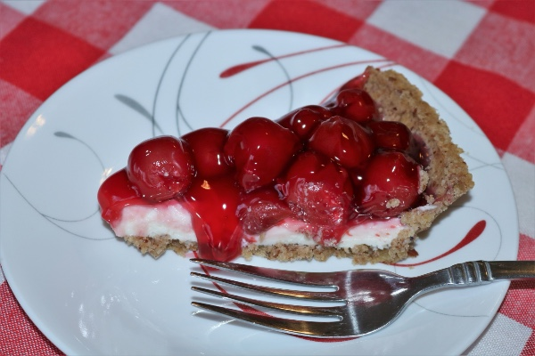

Home
Cheesecake

Description
Cheesecake is possibly the greatest food ever created. I will not debate this point, as I believe the truth of cheesecake to be self evident.
Below is a relatively easy philly cheesecake recipe from All Recipes. Enjoy!
Ingredients
- 1 ¾ cups Honey Maid Graham Cracker Crumbs
- 1 ¼ cups white sugar, divided
- ⅓ cup butter, melted
- 3 (8 ounce) packages Philadelphia Cream Cheese, softened
- 1 cup Breakstone's or Knudsen Sour Cream
- 2 teaspoons vanilla extract
- 3 large eggs
- 1 (21 ounce) can cherry pie filling
Steps
- Preheat the oven to 350 degrees F(180 degrees C).
- Combine graham crumbs, ¼ cup sugar, and butter in a large bowl.
- Press crumbs into bottom of 9-inch springform pan.
- Beat cream cheese and reamining 1 cup sugar in large bowl with an electric mixer until blended; beat in sour cream and vanilla extract.
- Beat in eggs, one at a time, on low speed, beating until just blended after each addition.
- Pour mixture over crust.
- Bake in the preheated oven until the center is almost set, 60 to 70 minutes. Run a knife around the rim of the pan to loosen cake; cool before removing rim. Refrigerate cheesecake for 4 hours.
- Top with pie filling before serving.